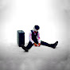

505
316M views · 8 years ago

d4vd - Romantic Homicide (Official Music Video)
33M views · 5 months ago

Leanin'
11M views · 3 years ago


HTML & CSS Full Course - Beginner to Pro
3.2M views · 1 year ago
The Wild Project #189 ft Sandra Estok | Un criminal le robó su identidad durante 6 años
208.649 views · 1 day ago

El infierno yazidi: 3.000 mujeres secuestradas por ISIS
534.738 views · 4 weeks ago